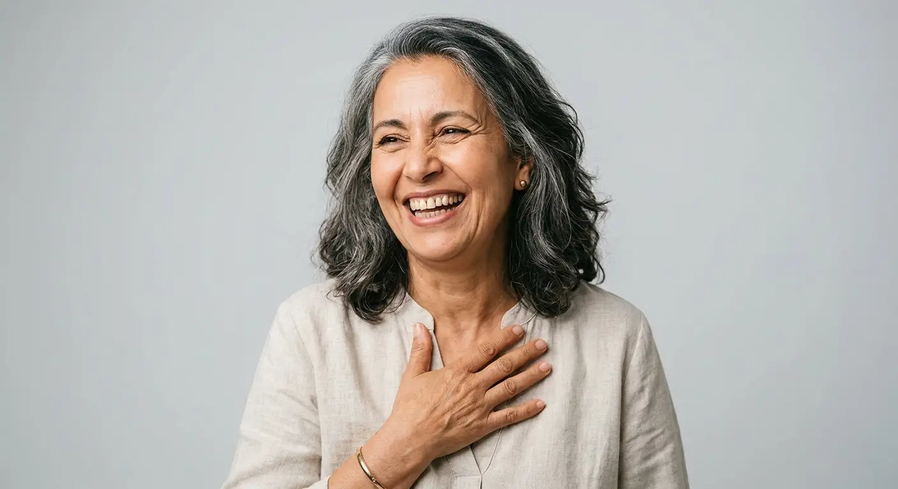

Détartrage, caries, traitement de canal, extraction : les soins dentaires courants préservent vos dents et évitent les traitements lourds. Diagnostic et soins par WeCare Dental Clinic à Casablanca.

Une carie ignorée progresse vers le nerf. Une gencive qui saigne évolue vers le déchaussement. Un plombage ancien qui fissure laisse passer les bactéries. Plus on attend, plus le traitement devient long et coûteux.
Les soins dentaires courants couvrent tout ce qui maintient vos dents en bonne santé : détartrage, traitement des caries, soins de canal et extractions. Ce sont les actes les plus fréquents au cabinet et ceux qui évitent les implants ou les couronnes plus tard.
Un contrôle tous les 6 mois suffit à détecter les problèmes tôt, quand ils se traitent simplement et à moindre coût.
Même sans douleur, un contrôle régulier permet de détecter les caries débutantes et les problèmes de gencive avant qu'ils ne s'aggravent.
Chaque problème dentaire a son traitement adapté. Ce tableau résume les actes courants, leur durée et leur coût.
| Détartrage | Soin de carie | Traitement de canal | Extraction | |
|---|---|---|---|---|
| Ce qu'il traite | Tartre et plaque accumulés | Carie débutante à modérée | Nerf infecté ou carie profonde | Dent non récupérable ou dent de sagesse |
| Durée | 30 min | 30 à 45 min | 45 à 90 min | 20 à 45 min |
| Anesthésie | Non | Locale si nécessaire | Locale systématique | Locale systématique |
| Prix (Casablanca) | 300 - 500 MAD | 500 - 1 500 MAD | 1 500 - 3 000 MAD | 300 - 800 MAD |
Vous avez une carie, une sensibilité ou un ancien plombage à remplacer. Le soin conservateur retire la partie atteinte et la remplace par un composite esthétique de la couleur de votre dent. Objectif : préserver au maximum la structure dentaire saine.
La carie a atteint le nerf ou une infection s'est déclarée. Le traitement de canal élimine l'infection à l'intérieur de la dent, nettoie et obture les canaux radiculaires. La dent est sauvée et une couronne la protège ensuite.
Vos gencives saignent ou votre dernier détartrage date de plus de 6 mois. Le nettoyage ultrasonique élimine le tartre que le brossage ne peut pas atteindre. C'est l'acte préventif le plus efficace contre les maladies de gencive et les caries.
Examen clinique, radiographie si nécessaire. Identification de tous les soins à réaliser. Explication claire du diagnostic, des options et des coûts avant de commencer.
Soins réalisés en une ou plusieurs séances selon le plan. Anesthésie locale pour les actes sensibles. Matériaux composites esthétiques et durables.
Contrôle à 6 mois, détartrage régulier, conseils d'hygiène adaptés à votre situation. La prévention reste le meilleur investissement pour votre santé dentaire.
Chirurgien-dentiste
Au WeCare Dental Clinic, chaque soin commence par un diagnostic précis et une explication claire. WeCare Dental Clinic prend le temps de répondre à vos questions, de vous montrer les radiographies et de vous présenter les options avant de commencer le moindre acte.
Sensibilité légère au chaud ou au froid possible pendant 24 à 48h. Évitez de mastiquer du côté traité le premier jour. Reprenez le brossage normal dès le soir.
Inconfort à la mastication pendant 3 à 5 jours, géré par les anti-douleurs prescrits. Évitez de croquer du côté traité. Une couronne sera nécessaire pour protéger la dent.
Légère sensibilité au froid pendant 24h. Les gencives reprennent leur couleur normale en quelques jours. Brossage normal immédiatement, fil dentaire dès le lendemain.
300 à 500 MAD au WeCare Dental Clinic. Le détartrage est partiellement remboursé par la CNSS et la CNOPS. Recommandé tous les 6 mois pour prévenir les complications.
Le détartrage est indolore. Pour les soins de caries et les traitements de canal, une anesthésie locale est utilisée. Vous ressentez une pression, pas de douleur. Une sensibilité légère peut persister 24 à 48h après le soin.
Oui. Une carie peut progresser sans douleur et atteindre le nerf. Plus elle est traitée tôt, plus le soin est simple, rapide et économique. Une carie non traitée peut nécessiter un traitement de canal, voire une extraction.
1 500 à 3 000 MAD au WeCare Dental Clinic, selon la dent et le nombre de canaux. Une couronne est souvent recommandée après le traitement pour protéger la dent fragilisée.
Consultez rapidement en cas de douleur intense et soudaine, gonflement du visage ou de la gencive, saignement qui ne s'arrête pas, dent cassée ou expulsée suite à un traumatisme. Appelez le 05 20 93 95 75 / 07 70 19 30 85.
Deux fois par an (tous les 6 mois) est la fréquence recommandée. Ce rythme permet d'éliminer le tartre accumulé, de prévenir les maladies de gencive et de détecter les caries à un stade précoce.
Oui. La CNSS et la CNOPS remboursent les soins conservateurs (caries, détartrage) et les extractions. Le montant dépend de votre régime. Certaines mutuelles privées complètent le remboursement. Nous fournissons les documents nécessaires.
Le composite est un matériau esthétique de la couleur de la dent, utilisé pour les obturations modernes. L'amalgame (plombage gris) est un ancien matériau encore fonctionnel mais moins esthétique. Au cabinet, nous utilisons exclusivement les composites pour un résultat naturel et durable.
Contrôle, détartrage ou soin au cabinet à Casablanca. Diagnostic complet en 30 minutes.